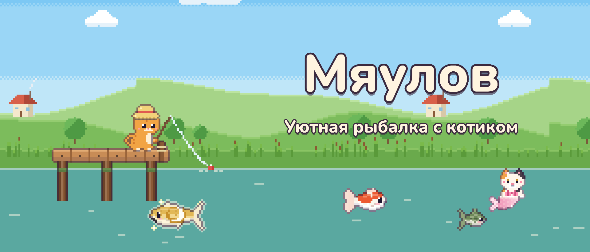
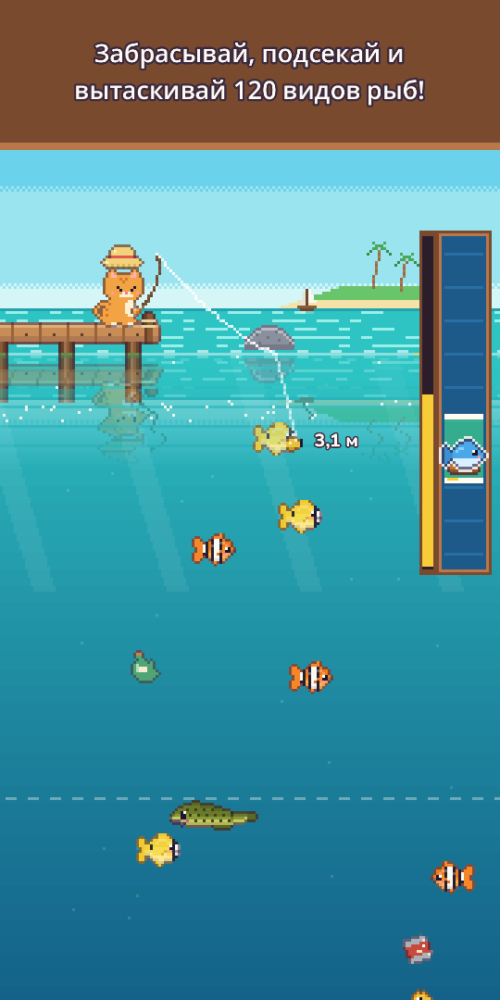
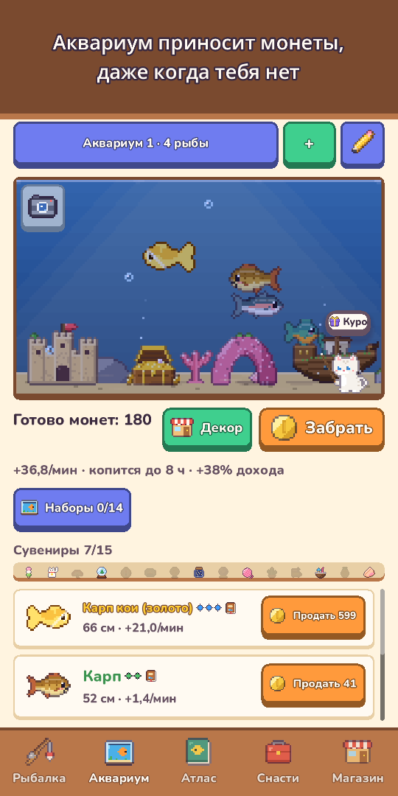
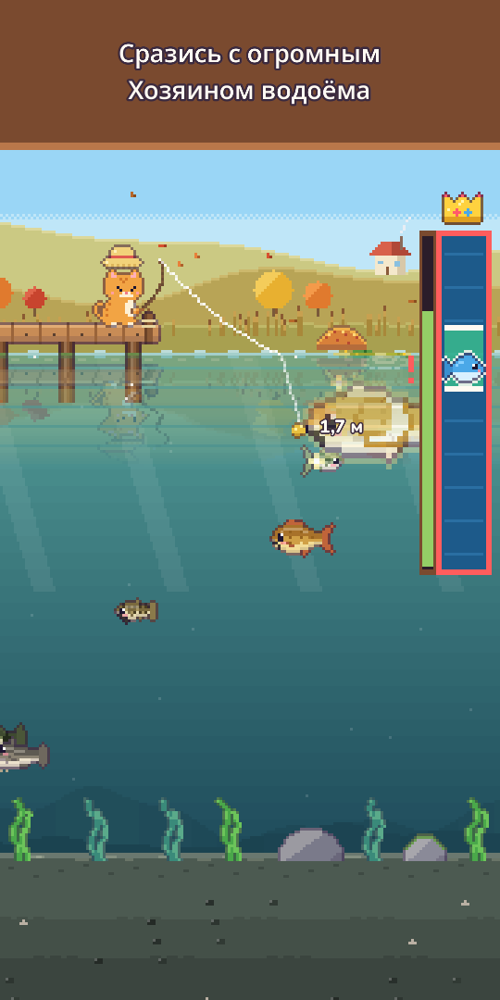
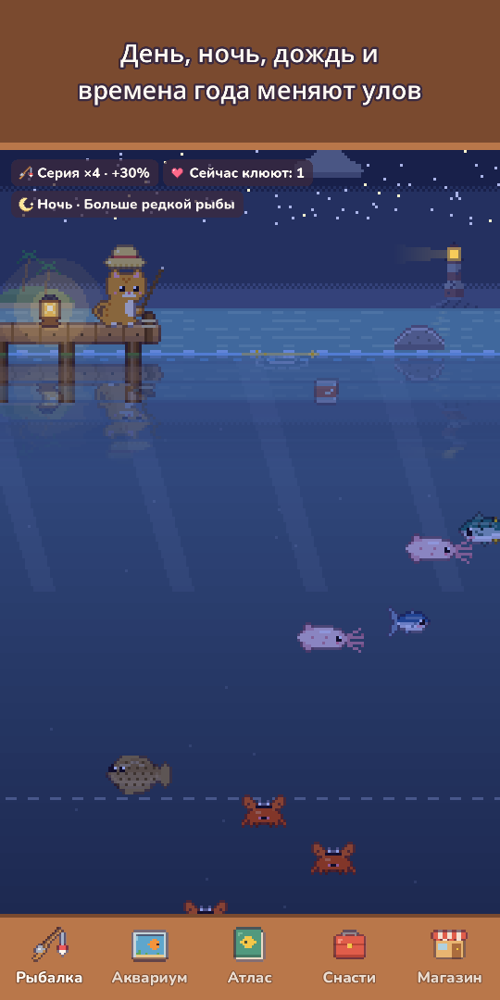
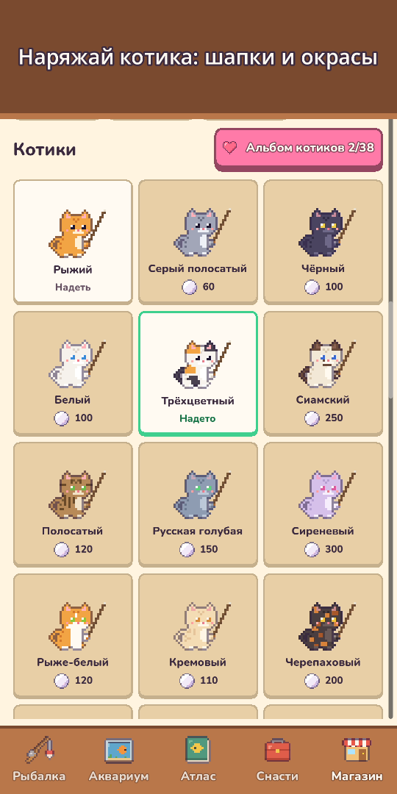
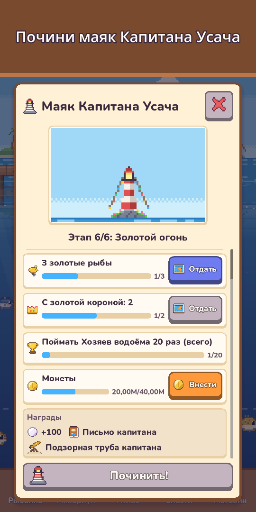
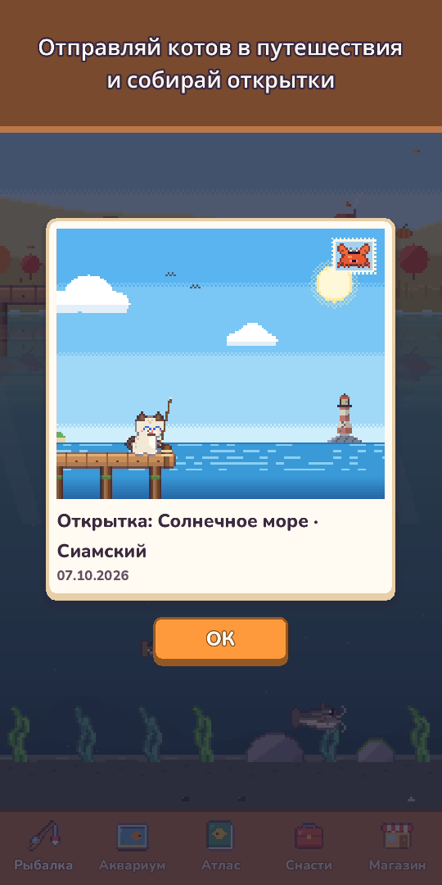

Мяулов: Котик-рыбак
Уютная рыбалка с котиком
Бери удочку и гидрокостюм! Лови 120 видов рыб, ныряй и фотографируй морских жителей, встречай редких котов-русалок.








Бери удочку, котик, — в воде полно сюрпризов!
«Мяулов» — уютная пиксельная рыбалка, в которую можно играть одним пальцем. Забрасывайте удочку, ведите наживку к рыбам, которых видно под водой, и вытаскивайте их с помощью приятной шкалы улова.
- Рыбалка одним пальцемудерживайте для заброса, ведите наживку свайпом, удерживайте, чтобы тянуть. Коснитесь, когда поплавок нырнёт, — подсечка даст фору (по желанию). А ещё круги на воде, брызги, вибрация и монеты, летящие в кошелёк
- 120 видов в 10 местахПруд на лугу, Горная река, Солнечное море, Коралловый риф, Ледяное озеро, Бездна, Затонувший храм, Облачное озеро, Вулканический остров и Мангровый лес
- Редкие золотые рыбы, косяки редких рыб, легенды вроде Лунного карпа и Звёздного кита и огромный Хозяин водоёма раз в день
- Дайвингнадень гидрокостюм, плавай в каждом месте, фотографируй существ, которых не поймать, для Фотоальбома и ищи с фонариком скрытые глубокие пещеры
- Коты-русалкив каждом месте живёт кот-русалка, реже любой легенды. Возьми его в аквариум или отпусти и получи благословение удачи
- 25 приманок 5 уровнейчем лучше приманка, тем реже рыба, особые приманки зовут русалок и легенд, а сильная рыба может даже порвать леску!
- Живое небодень и ночь идут по часам устройства, дождь, снег и радуга меняют клёв, а падающие звёзды дарят жемчуг, а времена года и настоящая луна — пейзаж. На каждом месте — прогноз на 6 часов, а золотые искрящиеся круги выдают крупную рыбу
- Атласу многих рыб есть любимое время (ночь, дождь, рассвет или сезон), за самые крупные уловы — золотые короны, а первый улов каждого вида запоминает своё небо: время, погоду, сезон и место
- Аквариумрыбы приносят монеты, даже когда вы не в игре. Украшайте его (Затонувший корабль, Коралловая арка и не только), собирайте наборы ради дохода, делитесь Макетами по короткому коду и коснитесь рыбы, чтобы узнать, где она поймана и сколько дней вы вместе
- Кошачья жизнь и коллекцииот Шапки-лягушки до Короны, окрасы, сезонные шапки и уютное Местечко котика. Отправьте кота из семьи в Кошачье путешествие на 3 часа за пиксельными открытками и читайте Кошачий дневник, когда вернётесь
- Соседи и праздникисоседские коты заглядывают в аквариум и оставляют сувениры, а Дружба открывает новые реплики, маленькие подарки и шапку дружбы. Турнир недели, Общий улов месяца, Рыба-гость недели и 5 праздников в году (сакура, лето, Хэллоуин, Рождество, Новый год) с печатями за особые украшения навсегда
- Читайте письма в бутылках от Капитана Усача, старого кота-смотрителя маяка, и помогите починить его маяк
- Растите в своём темпеулучшайте Удочку, Катушку, Леску, Наживку и Аквариум, делайте наживку из пойманной рыбы, чтобы ловить именно этот вид (кроме легендарных), а ещё Задания дня, Подарок дня (пропуск дня не сбрасывает прогресс) и подарки за дни вместе
- Уютные мелочирежим пейзажа прячет кнопки, чтобы просто любоваться видом, в Дневнике рыбака — Фотоальбом с последними 12 снимками аквариума и Местечка котика, а раз в день в пейзаже прячется малыш — найдите его и получите жемчуг
- Можно играть офлайн, в любое время
Игра бесплатная, покупки — по желанию: наборы жемчуга, Стартовый набор и Набор спонсора (награды без просмотра рекламы, шапка-корона и вдвое больший лимит офлайн-дохода). Все 120 видов можно поймать, не потратив ни копейки.
Никакой навязчивой рекламы и баннеров. Реклама только по желанию — за награду, например чтобы продать улов вдвое дороже.
Расслабьтесь, забросьте удочку и узнайте, что клюёт сегодня!